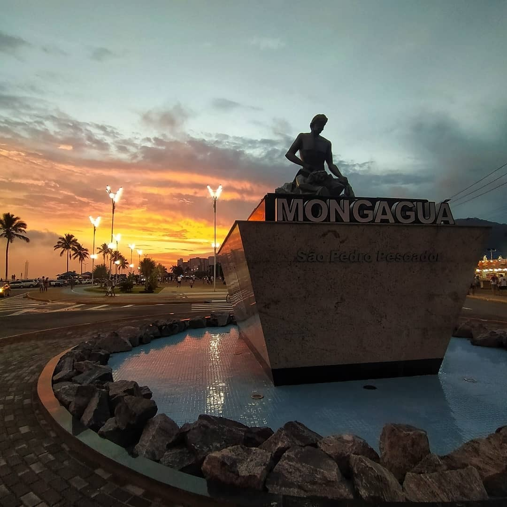
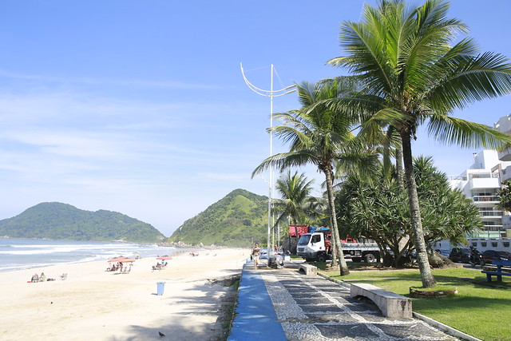
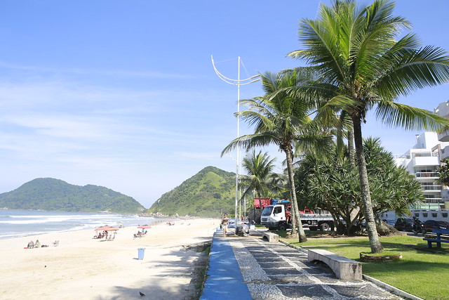
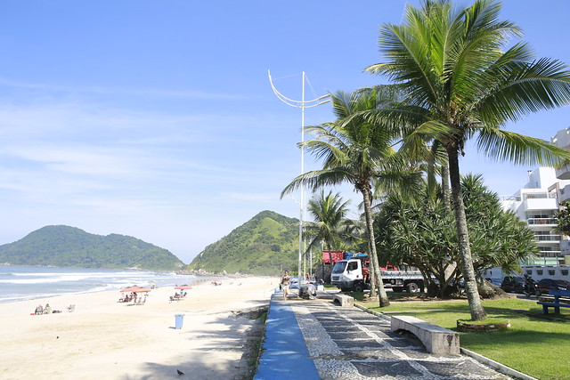

SOBRE NÓS
REAZO | Construções e Engenharia foi fundada em 16 de dezembro de 1996 com o objetivo de prestar serviços de engenharia elétrica como montagem e instalação de sistemas e equipamentos de iluminação e sinalização em vias públicas, portos e aeroportos, gerir iluminação pública e comercializar materiais de construção em geral. Além de prestar serviços de arquitetura.
🏆 Somos a primeira empresa a mudar alguns conceitos nos postes e suportes das luminárias. Idealizados por Anna Zacchi
🤩 ‘REAZO’ surgiu a partir das iniciais dos membros da família. Além disso, foi feito um trocadilho com a letra E no logotipo, sendo trocado pelo símbolo matemático sigma Σ (notação de somatório).
Áreas de atuação
- • Comércio de materiais elétricos em geral;
- • Projetos e engenharia de construões civis, elétricas, ambiental, arquitetura e urbanismo;
- • Gestão e manutenção de iluminação pública;
- • Iluminação ornamental de destaque;
- • Estudos e projetos luminotécnicos;
- • Extensões de redes e linhas rurais e urbanas;
- • Cabine de alta e média tensão, transformação, medição, proteção e SPDA;
- • Automações viáveis - semafóricas, painéis e CFTV;
- • Plantio de arvóres;
Nosso Escritório
Principais Obras em Prefeituras
- • Praça Dudu Samba - Mongaguá/SP
- • Museu do Café - Santos/SP
- • Orla da praia - Guarujá/SP

 

- • Itaquaquecetuba/SP
- • Itajubá/MG
- • Casa Branca/SP
- • Campos do Jordão/SP
- • Várzea Paulista/SP
- • Bertioga/SP
- • Paraisópolis/MG
Principais Obras e Parcerias

- Dofer Engenharia LTDA
- Conter S/A
- Construtora Beter S/A
- Singulare S/A
- CR Almeida
- Odebrecht - CBPO
- Serveng S/A
- CCR/Engelog
- Sabesp - Baixada Santista
- Alstom - Taubaté/SP
- Consórcio Visol - Complexo Itaquerão (DERSA)
- Galvão Engenharia S/A
- Termaq - Terraplanagens e Cconstrutora LTDA
- Construtora e Pavimentadora Latina
- Emparsanco/Schreder
- Enplan Engenharia
- Ureluz/CPFL
- Ureluz/Ecovias
- USP LESTE/SP
- Dersa
- S.A.Paulista
- Estacom Engenharia
- Encalso Construções LTDA
- Araguaia Construtora
- Delta Construções
- FBS. Construção e Pavimentação
- Construcap
- Jofege
- Construtora Barbosa Mello
- DER
Recorde de Iluminação de Passarelas
- 🥇 Soebe - DER 10
- 🥈 S.A Paulista - DER 5
- 🥈 MS Engenharia - DER 5
- 🥉 DP Barros - DER 5
- Construcap - DER 10
- Prefeitura de Mongaguá
Projeto e Execução para 23 de passarelas
Projeto e Execução para 06 de passarelas
Projeto e Execução para 06 de passarelas
Projeto e Execução para 05 de passarelas
Projeto e Execução para 04 de passarelas
Projeto e Execução para 03 de passarelas
Para saber mais: